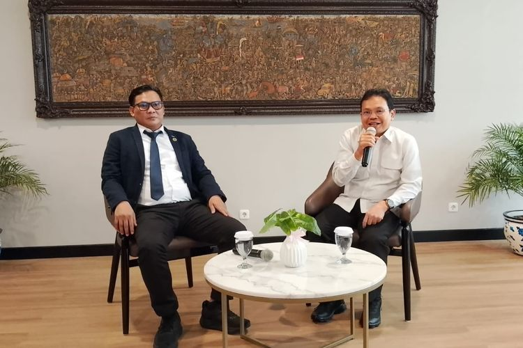
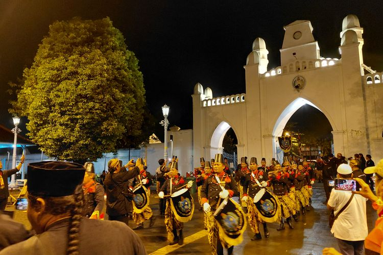

Kemenbud Sebut Tak Ikut Campur Suksesi Keraton Surakarta, Fokus ke Revitalisasi
8 agustus 2026
JAKARTA, KOMPAS.com - Kementerian Kebudayaan (Kemenbud) menyampaikan, tidak mencampuri urusan suksesi Keraton Surakarta, Jawa Tengah, sehubungan dengan revitalisasi cagar budaya di tempat itu.
“Kalau urusan suksesi kan itu urusan keluarga. Jadi tugas kita itu menjalankan amanat undang-undang bahwa bila ditetapkan sebagai cagar budaya nasional maka kewajiban kita untuk melakukan perlindungan, pengembangan dan pemanfaatannya,” kata Direktur Jenderal Pelindungan Kebudayaan dan Tradisi, Dr. Restu Gunawan, M. Hum. dalam audiensi bersama tim advokat di Jakarta, Senin (22/6/2026).
Audiensi tersebut turut dihadiri advokat Teguh Satya Bhakti bersama tim. Mereka disebut hadir untuk memberi masukan kepada Menteri Kebudayaan Fadli Zon berdasarkan pengalaman menangani persoalan hukum terkait keraton.
“Intinya kita tadi audiensi. Tim advokat sedang audiensi ke Bapak Menteri (Fadli Zon),” ujar salah satu anggota tim tersebut, dalam kesempatan yang sama.
Kemenbud fokus revitalisasi Keraton Surakarta, bukan suksesi
Targetkan revitalisasi di keraton lainnya di Indonesia
Restu menjelaskan, pemerintah tidak berada dalam posisi untuk menentukan atau mengatur suksesi di lingkungan keraton. “Kalau yang urusan suksesi itu urusan internal. Tugas kita adalah bagaimana melakukan perlindungan, pengembangan, dan pemanfaatannya,” kata Restu.
Ia menambahkan, program revitalisasi cagar budaya tidak hanya dilakukan di Keraton Surakarta. Sejumlah keraton dan istana lain di Indonesia juga masuk dalam target. Adapun revitalisasi yang dimaksud berfokus pada obyek cagar budaya di lingkungan keraton, seperti museum, manuskrip, atribut budaya, dan beberapa bangunan.
Selain revitalisasi di lingkungan keraton, Kementerian Kebudayaan juga mendorong percepatan penetapan Cagar Budaya Nasional. Restu mengatakan, target tersebut tidak lepas dari banyaknya potensi cagar budaya di berbagai daerah.
“Saya punya keyakinan bahwa penetapan Cagar Budaya Nasional nanti inshaallah di tahun ini kita bisa 1.000, kalau perlu lebih,” ujar Restu.
Beri masukan ke Menteri Kebudayaan

Teguh mengatakan, kehadiran tim advokat dalam audiensi tersebut berawal dari permintaan untuk berkolaborasi dengan Kementerian Kebudayaan. Masukan itu diberikan karena mereka pernah menangani salah satu keraton di Indonesia yang mengalami perselisihan.
“Hasil dari pertemuan tadi, kita diminta tolong sama Pak Menteri dan Pak Dirjen untuk berkolaborasi,” ujar Teguh. "Untuk memberikan masukan atas pengalaman kami sebelumnya, kita pernah menangani salah satu keraton yang ada di Indonesia yang sedang berselisih," tambah dia.
Teguh menegaskan, saat ini tim advokat sudah tidak lagi menangani perkara tersebut. Mereka hadir bukan untuk mewakili salah satu pihak dalam konflik keraton. Ia juga menambahkan, persoalan cagar budaya di lingkungan keraton sering kali bersinggungan dengan klaim aset atau kepemilikan.
Menurut Teguh, idealnya obyek cagar budaya dilihat sebagai bagian dari institusi, bukan sekadar milik pribadi.
Konflik internal disebut bisa hambat revitalisasi

Meski pemerintah tidak mencampuri suksesi, Teguh menyebut konflik internal tetap bisa berdampak pada proses revitalisasi cagar budaya. Persoalan hukum yang berlarut-larut dapat memperlambat pendataan, pelindungan, dan pemanfaatan cagar budaya. “Ini tidak bisa menghalangi, tapi cuma menghambat,” ujar Teguh.
Menurut dia, hambatan tersebut dapat merugikan banyak pihak, mulai dari keluarga keraton, pemerintah, pemerintah daerah, masyarakat sekitar, hingga sektor wisata. “Nah, konsekuensinya adalah rugi kita semua. Rugi keluarganya, rugi pemerintahnya, rugi masyarakat juga, rugi pemerintah daerah,” kata Teguh.
Ia menilai, pemerintah tetap perlu hadir dalam pelindungan cagar budaya agar warisan sejarah tidak terbengkalai. Menurut Teguh, cagar budaya yang dikelola dengan baik dapat membawa manfaat bagi masyarakat daerah.
“Ujungnya sebenarnya untuk kesejahteraan. Kesejahteraan masyarakat daerahnya sendiri,” ujar Teguh. “Karena kebudayaan di daerah itu kan ujungnya untuk kesejahteraan masyarakat. Menarik wisatawan, menarik pariwisata,” lanjutnya.